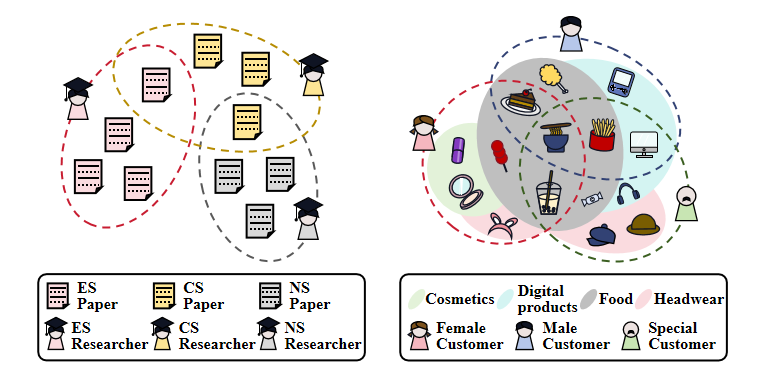

Hypergraph neural networks (HNNs) have shown promise in handling tasks characterized by high-order correlations, achieving notable success across various applications. However, there has been limited focus on heterophilous hypergraph learning (HHL), contrasting with the increasing attention given to graph neural networks designed for graphs exhibiting heterophily. This paper aims to pave the way for HHL by addressing key gaps from multiple perspectives: measurement, dataset diversity, and baseline model development. Firstly, we introduce metrics to quantify heterophily in hypergraphs, providing a numerical basis for assessing the homophily/heterophily ratio. Secondly, we develop diverse benchmark datasets across various real-world scenarios, facilitating comprehensive evaluations of existing HNNs and advancing research in HHL. Additionally, as a novel baseline model, we propose HyperUFG, a framelet-based hypergraph neural network integrating both low-pass and high-pass filters. Extensive experiments conducted on synthetic and benchmark datasets highlight the challenges current HNNs face with heterophilous hypergraphs, while showcasing that HyperUFG performs competitively and often outperforms many existing models in such scenarios. Overall, our study underscore the urgent need for further exploration and development in this emerging field, with the potential to inspire and guide future research in HHL.

@article{Li2025hyper,
author = {Ming Li, Yongchun Gu, Yi Wang, Yujie Fang, Lu Bai, Xiaosheng Zhuang, Pietro Lio},
title = {When Hypergraph Meets Heterophily: New Benchmark Datasets and Baseline},
journal = {AAAI},
year = {2025},
}